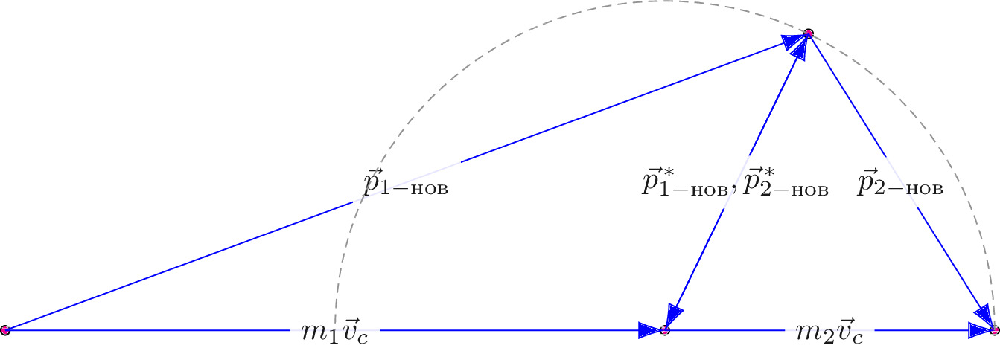

pre.tex
\documentclass[tikz]{standalone}\input{pre.tex}\begin{document}\begin{tikzpicture}[scale=0.75]
\coordinate (0) at (0,0);
\coordinate (I) at (-10,0);
\coordinate (A) at (2.179,4.5);
\coordinate (II) at (5,0);
\draw[fill=magenta] (I) circle(2pt)
(II) circle(2pt)
(A) circle(2pt)
(0) circle(2pt);
\draw[force,-{Latex[length=3mm,width=2mm]}]
(I) --
node[midway,fill=white!20, opacity=0.9]
{$\vec{p}_{1-\text{нов}}$}
(A);
\draw[force,-{Latex[length=3mm,width=2mm]}]
(I) --
node[midway,fill=white!20, opacity=0.9]
{$m_1\vec{v}_c$}
(0);
\draw[force,-{Latex[length=3mm,width=2mm]}]
(0) --
node[midway,fill=white!20, opacity=0.9]
{$m_2\vec{v}_c$}
(II);
\draw[force,-{Latex[length=3mm,width=2mm]}]
(0) --
% node[midway,fill=white!20, opacity=0.9]
% {$$}
(A);
\draw[force,-{Latex[length=3mm,width=2mm]}]
(A) --
node[midway,fill=white!20, opacity=0.9]
{$\vec{p}_{1-\text{нов}}^{\,*},\vec{p}_{2-\text{нов}}^{\,*}$}
(0);
\draw[force,-{Latex[length=3mm,width=2mm]}]
(A) --
node[midway,fill=white!20, opacity=0.9]
{$\vec{p}_{2-\text{нов}}$}
(II);
\draw[axis] (0)++(5,0) arc (0:180:5);
\end{tikzpicture}\end{document}